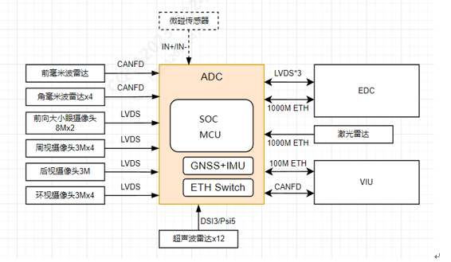
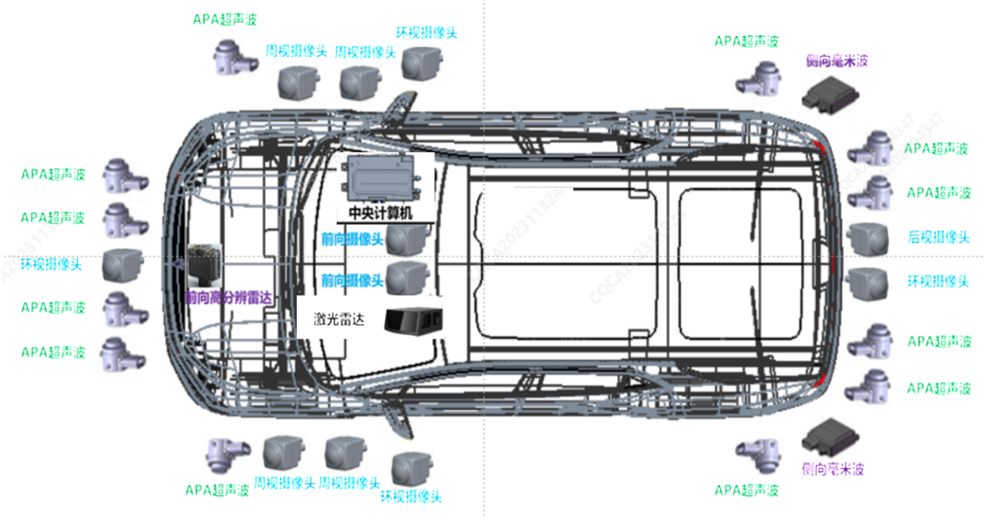
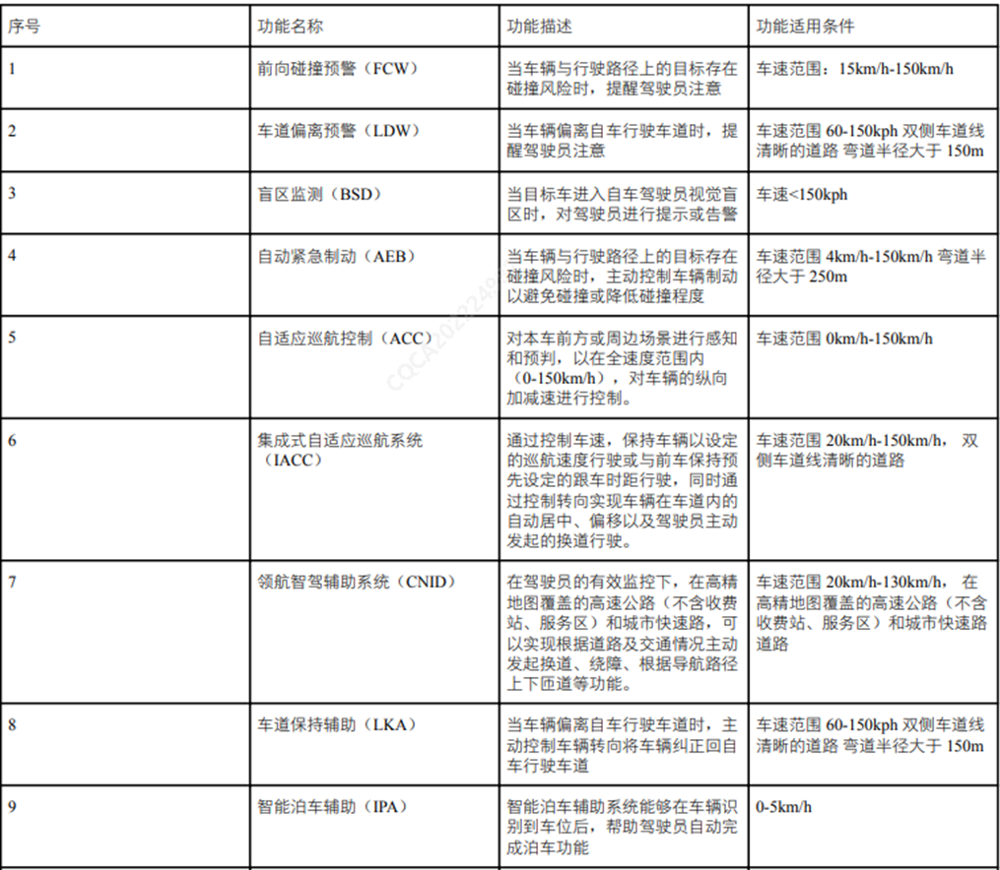

Принципиальная схема системы

Топология автомобиля

Функции системы
Центральный компьютер (J6M) в качестве контроллера домена интеллектуальной системы вождения на платформе со средней вычислительной мощностью использует жидкостную систему охлаждения, подключает сенсорные данные, такие как видеопотоки и облака точек от датчиков 3R (передний радар * 1 + угловой радар * 2), 11V (камеры кругового обзора * 4 + периферийного обзора * 4 + переднего обзора * 2 + заднего обзора * 1), 1L (лидар * 1), 12U (ультразвуковые датчики * 12), выполняет обработку слияния данных восприятия в сочетании с высокоточными картами, GNSS, IMU и др., рационально управляет автомобилем для реализации функций интеллектуального вождения. Основные реализуемые функции приведены ниже:
